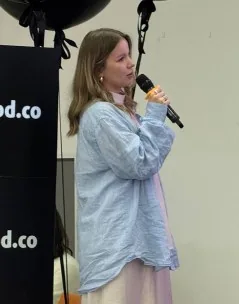
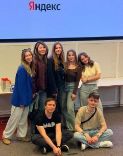
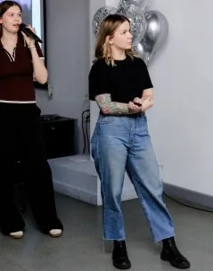

Гигасправка
Агентная архитектура поддержки умных устройств Sber Devices — решение чинит проблемы раньше, чем их заметит пользователь.
2026


Телемост
Стратегия вывода Яндекс Телемоста в B2C — единое пространство для жизни вместо ещё одного мессенджера.
2026NEURAE
Запуск бренда нейрокосметики Sisley Group в России: стратегия и лендинг.
2026Лучи
Сайт и личные кабинеты для B2B-страхования и медтеха, включая HR-кабинет.
2026Инструменты
Прошла аттестацию по ИИ в Лучах — AI-native компании.
Генерирую гипотезы через Claude и ChatGPT, изображения и видео — через Nano Banana, прототипирую в Figma MCP и через вайб-кодинг в Cursor и Claude.
Обо мне
Дизайн — это не просто работа, а то, во что я вкладываюсь и продолжаю развивать. Год в Британской высшей школе дизайна был не про «прошла курс», а про полное погружение: я сама проводила интервью, питчила проекты, была активна на защитах и в обсуждениях. С командой защитила результат в офисе Яндекса, Sisley и Сбера. На защите получила хорошую обратную связь от менторов и руководительницы курса.


